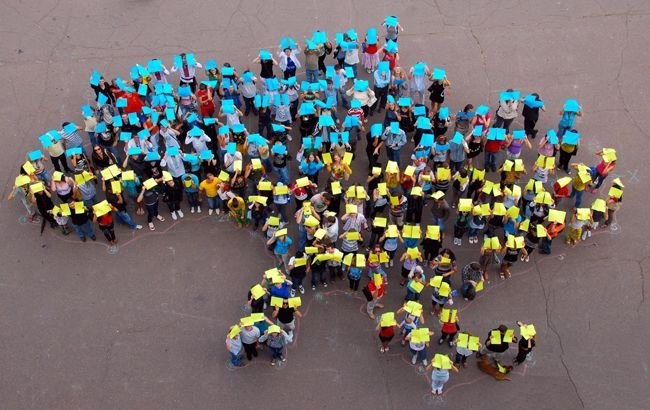

Клімат
Віддаленість України від океанів, континентальність Євразії та переважно рівнинний рельєф визначають клімат країни як помірно-континентальний, що поступово змінюється із заходу на схід. Зі збільшенням континентальності літо стає спекотнішим, зима холоднішою, а кількість опадів меншою. Такі комфортні кліматичні умови дають людям можливість насолоджуватися пляжним відпочинком на Чорному морі влітку і кататися на лижах на гірськолижних курортах засніжених Карпат взимку.

Населення
Станом на 1 лютого 2015 року, за даними Держстату, чисельність населення України становила 42 741 248 осіб постійного населення та 42 910 885 осіб наявного населення.
Релігія
Основною релігією в Україні є християнство. Більшість віруючих - християни, більшість з яких належать до православних церков. Католицька церква представлена Українською греко-католицькою церквою і в основному поширена в Галичині (Тернопільська, Львівська та Івано-Франківська області).
Транспорт
В Україні розвинені майже всі види сучасного транспорту: залізничний, автомобільний, морський, річковий, повітряний. Залізнична мережа країни поділяється на шість доріг (напрямків): Донецька, Львівська, Одеська, Південна, Південно-Західна та Придніпровська. Максимальна швидкість пасажирських поїздів - 160 км/год. Загальна довжина колій становить 22473 км.

Кухня
У багатьох людей українська кухня міцно асоціюється з певними стравами. Які ж вони?
- Для всіх жителів України, а також для всіх туристів відомо, що головною традиційною стравою або “делікатесом” України, так би мовити, є сало і це правда. Цей продукт тут шанують і люблять. Його вживають у будь-якому вигляді: свіже для смаження, солоне для вживання в їжу, як основну страву і як закуску.
- Борщ. Це супова страва і дуже особлива. Вважається складним у приготуванні, оскільки містить понад 20 інгредієнтів, основними з яких є капуста, буряк, картопля та кісткова юшка (бульйон). Справжній український борщ зможе приготувати тільки український кухар, оскільки не головне знати кількість компонентів і весь процес приготування, головне вміння - "на око" визначити наваристість бульйону, готовність обсмажених овочів і густоту страви.
- Хліб в українській кухні має дуже важливе значення. Зазвичай хлібини замішували із суміші пшеничного та житнього борошна. Тісто готували на спеціальній заквасці, а випікали в українській печі. Паляниці виходили рум'яними, ароматними, з хрусткою скоринкою. Виріб з чистого пшеничного борошна називався паляницею і вважався святковою стравою. В інші дні пекли ячмінний хліб, а також страви з прісного тіста, наприклад, вареники. Їх подають як основну страву або як гарнір до м'яса. Говорячи про хлібобулочні вироби, не можна не згадати всім відомі часникові пампушки, без яких неможливо уявити борщ. На десерт подають пісочне тісто або пиріжки.
- Останніми, але не менш важливими в цьому списку є вареники. За принципом виготовлення процес нагадує приготування кавказьких мантів і російських пельменів, з тією різницею, що в якості начинки використовуються різні овочі і ягоди в будь-якому вигляді. Найчастіше в кафе і ресторанах в меню можна зустріти вареники з картоплею і цибулею в цибулевій піджарці на вершковому маслі, вареники з сиром і сметаною, вареники з вишнею і т.д.

Замки і фортеці України
В Україні є багато історичних пам'яток, таких як замки. Сотні туристів щороку активно цікавляться замковим туризмом. Тут є середньовічні палаци та фортеці, наприклад, Старий замок у Кам'янці-Подільському, Білгород-Дністровська фортеця, Олеський та напівзруйнований Невицький замки та багато інших унікальних пам'яток архітектури. Згодом, після середньовіччя, в Україні почали зводити більш розкішні будівлі. До таких споруд відносяться: Замок генерал-майора Попова в Запорізькій області.
Природні пам'ятки України
Приголомшливі природні пам'ятки України вражають уяву, чого тільки варта так звана кам'яна могила в Запоріжжі. Її часто називають &quo ;українським Стоунхенджем&quo ;, це стародавнє святилище під відкритим небом. Величезні кам'яні брили висотою до 13 м з наскальними малюнками та стародавніми знаками справляють справді заворожуюче враження. Туристи вважають, що найпопулярніші природні місця для відпочинку знаходяться в Одесі, Карпатах та на Шацьких озерах у Волинській області. Природні пам'ятки України вражають своєю небесною красою. Так, наприклад, на Закарпатті є діючий вулкан, але замість лави і попелу з нього вивергається бруд. Високогірне Синерівське озеро вражає своєю кришталево чистою водою. На Закарпатті є Долина нарцисів, а також унікальне солоне озеро Кунігунда, яке з'явилося через просідання соляної шахти.

Особливості приватної медицини
До ключових переваг приватних клінік перед державними можна віднести:
- Комфортні умови прийому - пацієнту не доводиться стояти в черзі. Йому достатньо записатися на прийом по телефону і прийти до фахівця в призначений час. Це особливо важливо для людей, які погано себе почувають;
- Вдале планування і сучасний дизайн дозволяють пацієнту перебувати в комфортних умовах під час прийому, діагностики, маніпуляцій, а також під час перебування в стаціонарі; Прозора система оплати послуг в приватних клініках означає відсутність корупції, коли крім офіційної вартості послуг і медикаментів пацієнт повинен “принести” лікарю подарунок за свою лояльність і згоду на лікування;
- Сучасне обладнання - завдяки стабільним інвестиціям приватних власників у свої клініки, останні оснащені найсучаснішим діагностичним обладнанням, що дає можливість виявляти патології навіть на ранніх стадіях їх розвитку;
- Висока кваліфікація лікарів і медичного персоналу, що забезпечується ретельним відбором кадрів, і висока заробітна плата стимулюють фахівців клінік до якісного виконання своїх обов'язків;
- Можливість вибору лікаря - пацієнт має право вибрати лікаря або змінити його на іншого під час лікування.